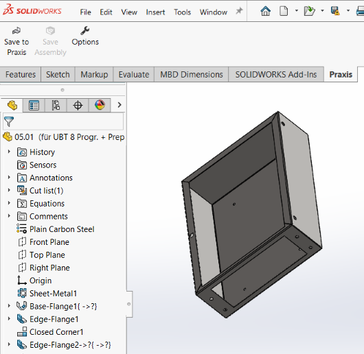
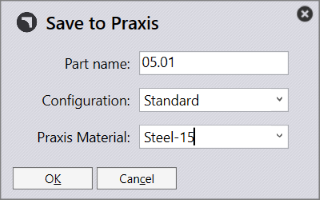
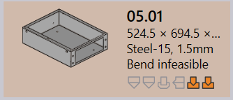
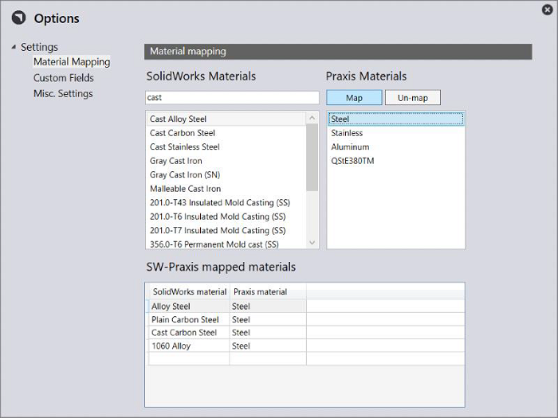
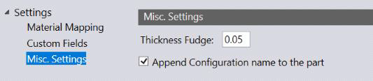
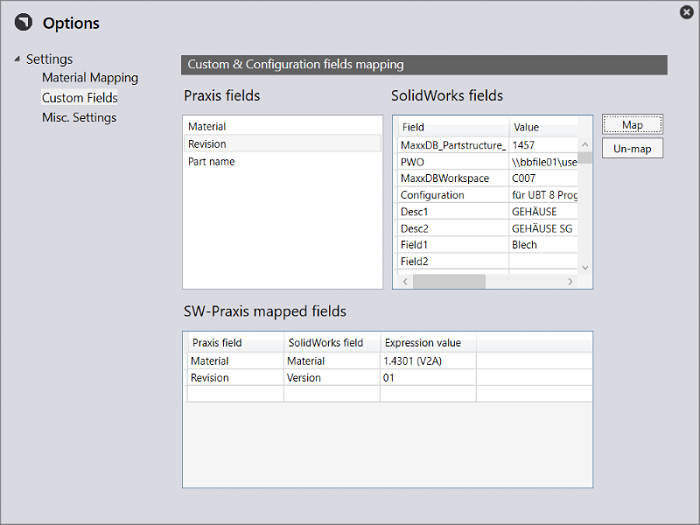

● Open a sheetmetal part in SolidWorks. (Praxis already ships with a few. Locate them in C:\Program Files\Metamation\Praxis\Samples\Parts folder).
● Now switch to the Praxis tab. It should show the Praxis toolbar in SolidWorks.

Press Save to Praxis toolbar button to save the part to Praxis. This displays the save dialog where you can choose the part-configuration and the Praxis raw-material. Press OK to save.
 
This setting can be used to help Praxis convert the SolidWorks material and the part thickness to a Praxis raw-material during the part upload. To set it up:
● Click on Options button to launch the Options dialog. Switch to the Material Mapping page and define material mapping between SolidWorks and Praxis materials by clicking first on a SolidWorks material from the left list followed by the Praxis material from the right list. Now use Map button to define the mapping. The mapping is added to the bottom list.

Select the mapped item and use Un-map button to delete the mapping.
● The mapping defined here is used to lookup the Praxis material from the SolidWorks material assigned to the Part. Thickness Fudge is another setting which affects the material lookup. This is the tolerance used when matching the model thickness to the raw-material thickness.

This is another setting which can be used to read the material, revision etc. from a SolidWorks part. To set it up:
● Select the Custom Fields settings page.

Using Map/Un-map buttons, map the required Praxis fields with SolidWorks Custom and Configuration fields. (The field values displayed here are loaded from the active part).
Note: The settings defined here are saved into Praxis repository and are synchronized across all Praxis-SW stations.